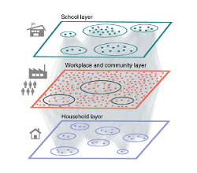
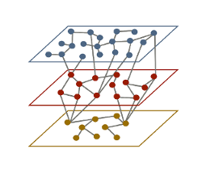
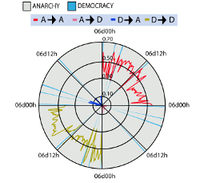

Bio
I am a data/network scientist currently working in the Mathematics and Complex Systems group at ISI Foundation in Turin, Italy. I would summarize my research interests simply by using the title of my Ph.D. Thesis: Networks, Epidemics and Collective Behavior: from Physics to Data Science.
During the current COVID-19 pandemic I have devoted all my research to studying its spreading, creating data-driven models that, hopefully, will help policymakers in these hard times. I do not remember what a weekend was anymore, but it is really satisfying to finally be able to use our knowledge to make a difference.
I love all the aspects that have to do with data, from obtention to visualization. As such, it is hard for me to focus on one single field. Nevertheless, I would say that because of my physics background, I am particularly interested in unraveling the mechanisms that lead to the data. That is, rather than simply focusing on finding correlations and making uninformed predictions, my aim is to understand the dynamical process that leads to it.
On the left side of this site, you will find my contact information if you want to have a chat. In Publications you can check my works. I would also suggest you to visit the Resources section, it is a bit brief for the moment, but I hope to extend it soon.
Selected publications

Here we integrate anonymized, geolocalized mobility data with census and demographic data to build a detailed agent-based model of severe acute respiratory syndrome coronavirus 2 (SARS-CoV-2) transmission in the Boston metropolitan area. Our results show that a response system based on enhanced testing and contact tracing can have a major role in relaxing social-distancing interventions in the absence of herd immunity against SARS-CoV-2.

Data-driven contact structures
Current epidemic models still lack a faithful representation of all possible heterogeneities and features that can be extracted from data. Here, we bridge a current gap in the mathematical modeling of infectious diseases and develop a framework that allows to account simultaneously for both the connectivity of individuals and the age-structure of the population.

The dynamics of Twitch Plays Pokémon
Here, we study the dynamics of a crowd controlled game (Twitch Plays Pokémon), in which nearly a million players participated during more than two weeks. Unlike other online games, in this event all the players controlled exactly the same character and thus it represents an exceptional example of a collective mind working to achieve a certain goal.